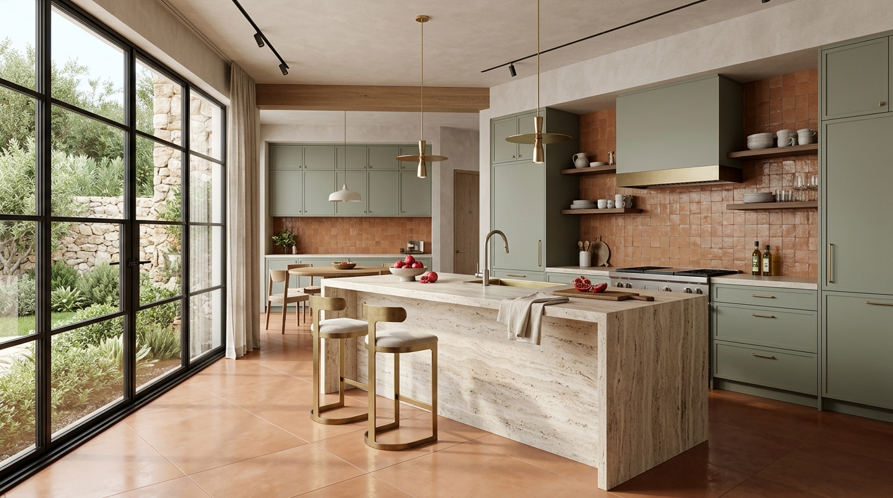

Loading article content...
Material Selection

Selecting Statuario vs. Travertine: Marble Curation for Villa Porticos
A comprehensive study on vein continuity, porosity treatments, and bookmatched stone sourcing for double-height entrances.